La cache sous le plancher
Dans la chambre de Jason, des lames descellées cachent de l'argent — et quelques photos qui racontent son passé. C'est le seul « compte » disponible avant la mission Buck Me : y déposer dès qu'on rentre. TIP-50
S4 · G6 · Maîtrise
Trois statistiques à monter, un Focus qui sert de détecteur, deux accessoires d'arme non négociables, un menu véhicule que presque personne ne trouve, et une sauvegarde par chapitre qui évite bien des regrets.
GTA VI assume sa simulation : les personnages se construisent. Le plus souvent, les joueurs montent une seule jauge et ignorent les deux autres.
Musculation en salle ou aux agrès de plage. TIP-38
Cardio : course, vélo, kayak. TIP-38
Activités « mindfulness » : pêche, billard. C'est la jauge du ralenti de visée. TIP-38
Toutes les checklists publiées le 18 novembre disent la même chose dans un ordre différent : la première heure ne se rentabilise pas, elle s'apprend. Six gestes, dans l'ordre où ils débloquent le reste.
TIP-53TIP-53TIP-53TIP-54TIP-55TIP-53TIP-55
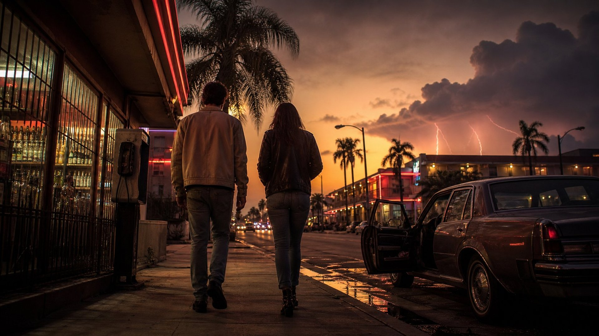
TIP-39Voir à travers les murs : les ennemis apparaissent en surbrillance.TIP-39Repérer les codes : les notes qui contiennent des combinaisons de coffre se voient en Focus.TIP-39Suivre les traces : les pistes d'animaux deviennent lisibles, ce qui sert la chasse et le bestiaire.TIP-39Fouiller un coffre de voiture : on peut deviner qu'un PNJ y cache des objets de valeur avant même de l'ouvrir.TIP-49Détecter les rencontres uniques : un halo circulaire apparaît quand un événement optionnel est proche. C'est le signal pour ne pas passer à côté.Après une centaine d'heures de retours, quatre habitudes reviennent chez ceux qui perdent le moins de temps — et d'argent.
TIP-50Une tenue dans le coffre. Changer de vêtement casse le signalement vestimentaire ; garder une tenue de rechange dans le coffre de la voiture personnelle transforme une poursuite en simple trajet.TIP-53La portière est une arme. Elle sert à écarter un assaillant, et devient un coup de pied à moto — de quoi sortir un adversaire de sa bécane. L'application Scooter Bros fait apparaître, réparer ou sortir de la fourrière un véhicule possédé, mais chaque usage se paie ; jeter ses déchets augmente le Focus.TIP-51Santé et endurance se perdent, le Focus reste. Musculation pour la santé, course, vélo et kayak pour l'endurance, méditation, pêche et billard pour le Focus — le seul des trois qui progresse définitivement. Un repas donne un bonus temporaire, jamais un gain permanent.TIP-52Aucun rejeu de mission. Sauvegarde manuelle avant chaque mission importante, sortie propre du jeu plutôt que veille prolongée, et vérification que la sauvegarde automatique apparaît bien dans les options.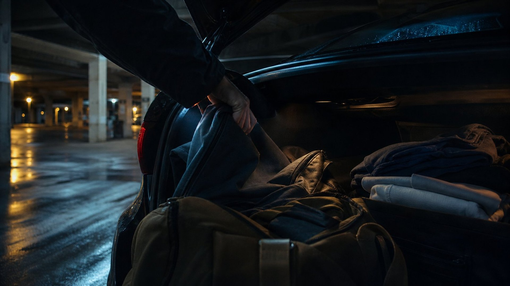
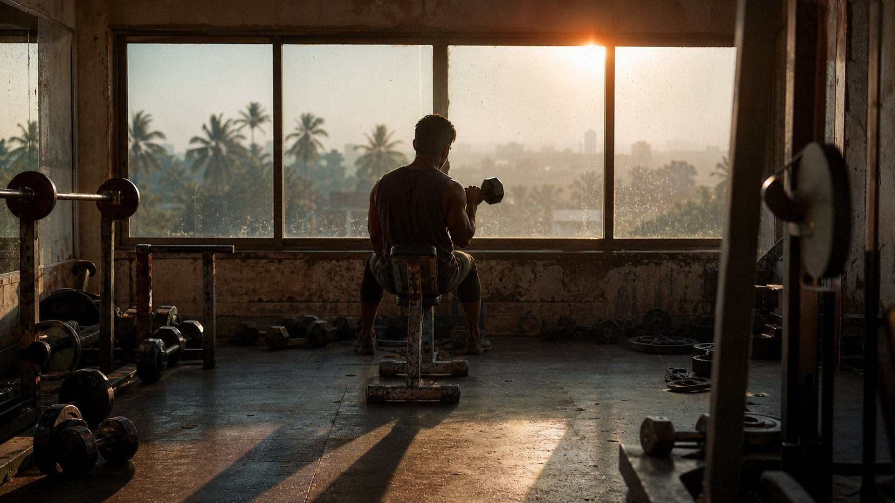
Quatre détails que les joueurs du 19 novembre ont trouvés avant la fin du prologue, et qu'aucun tutoriel ne présente dans cet ordre.
Dans la chambre de Jason, des lames descellées cachent de l'argent — et quelques photos qui racontent son passé. C'est le seul « compte » disponible avant la mission Buck Me : y déposer dès qu'on rentre. TIP-50
Le serpent de compagnie de Jason accorde un bonus de Focus quand on la nourrit et qu'on la regarde manger. C'est le premier gain de Focus gratuit du jeu, et il se répète à chaque retour à la maison. TIP-54
En Focus, une porte blanche s'ouvre, une porte rouge est reliée à l'alarme. La mini-carte complète l'information en révélant les pièces de l'arrière-boutique à mesure qu'on approche. TIP-55
Jeter ses déchets, caresser un animal, aider un passant : chaque bonne action donne un bonus temporaire de Focus. Dormir la nuit, s'entraîner le matin, manger, se laver — la routine complète sert la mécanique. TIP-56
TIP-57
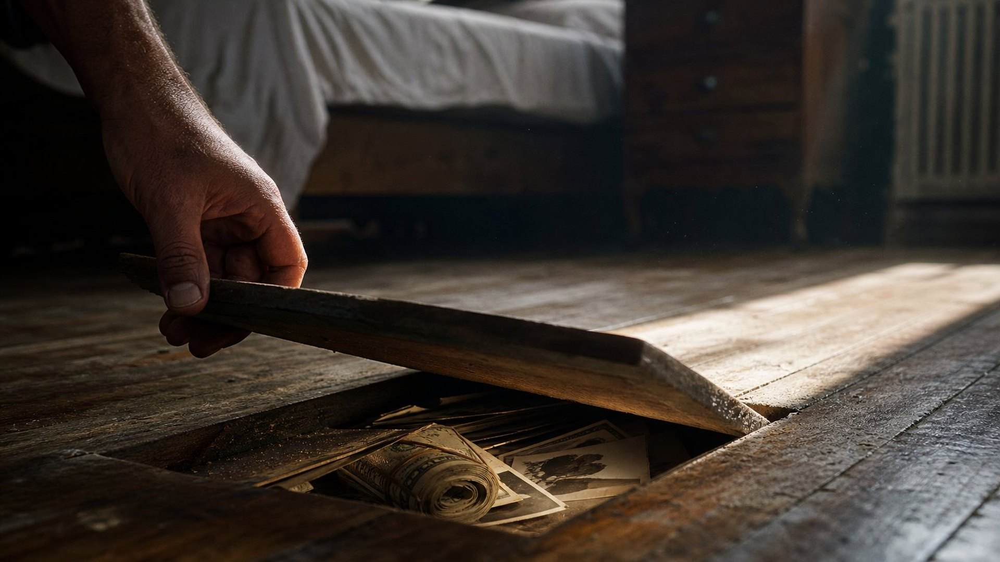
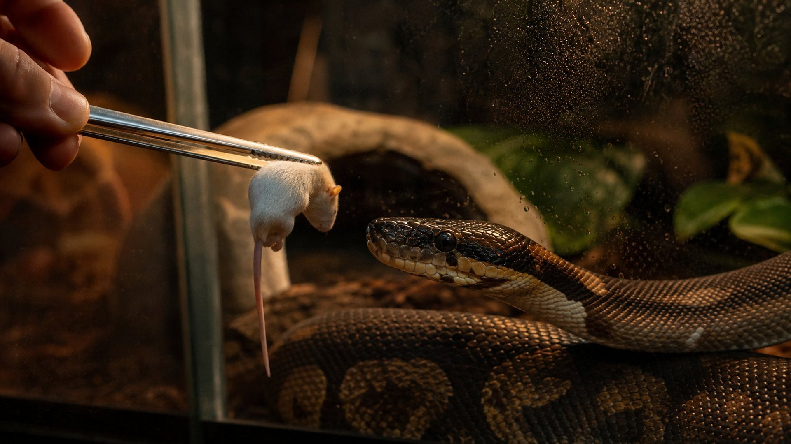
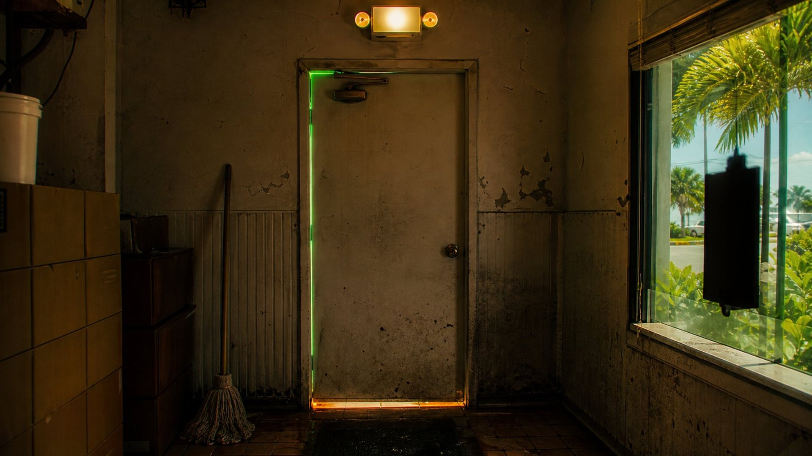
C'est la première surprise du jeu, et elle coûte cher à qui ne la connaît pas : on ne clique pas sur la carte pour se téléporter. Trois méthodes existent, et une seule est gratuite.
| Méthode | Coût | Limite |
|---|---|---|
| Changer de personnage | gratuit | le plus rapide : l'autre personnage attend près du refuge en cours |
| Bus et trains | quasi gratuit | soumis à des horaires, réseau dense dans Vice City |
| RydeMe / Paradise Taxi | course + 100 $ pour sauter le trajet | l'app arrive au chapitre 2 ; le taxi dès la première mission |
TIP-59Autopilote — maintenir la croix directionnelle vers le bas passe en caméra cinématique et laisse la voiture rouler seule ; on peut aussi demander au partenaire de prendre le volant. Il respecte le code, donc il s'arrête net dans les embouteillages.TIP-60Pourboire — 5 $ au chauffeur, jusqu'à deux fois, l'incite à accélérer. Le moment de la journée compte aussi : la police réagit différemment, et une rue calme la nuit rend un braquage plus simple qu'un après-midi de Vice City.MEC-31Aide contextuelle — maintenir la croix directionnelle vers la droite affiche l'aide de l'action en cours, sans quitter le jeu.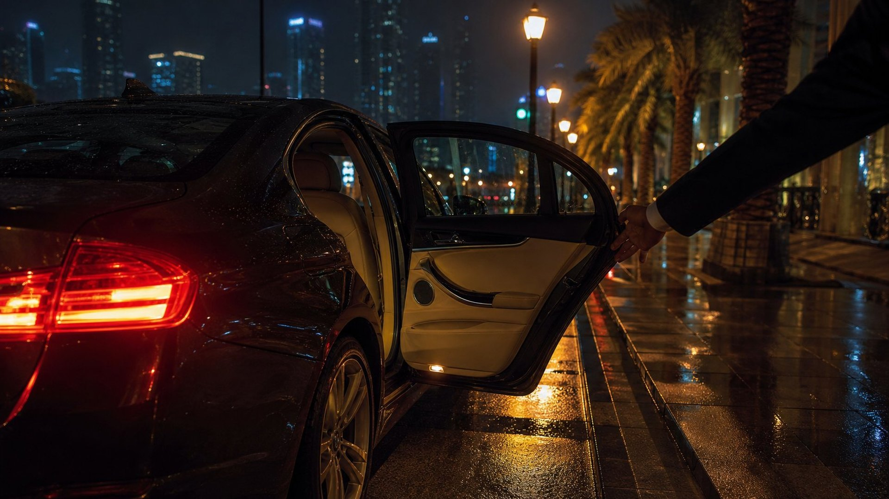
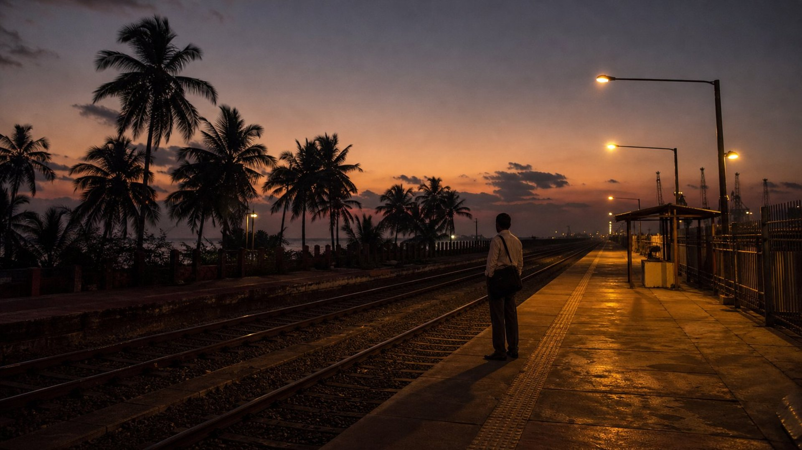
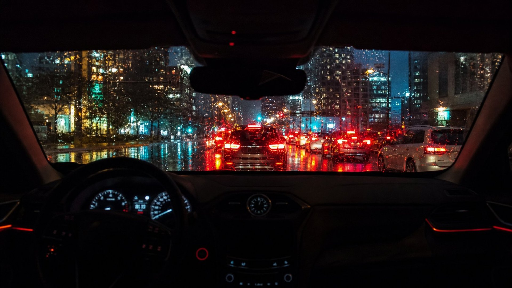
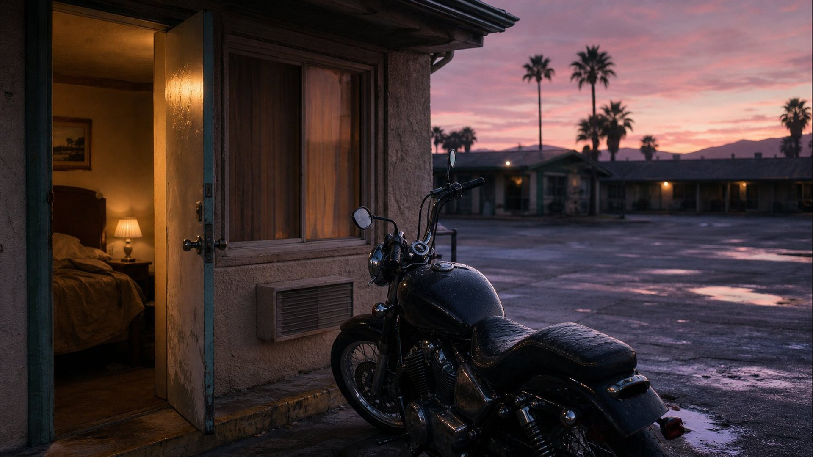
Ces trois conseils reviennent en boucle dans les retours des premières vingt-quatre heures. Ils viennent de joueurs, pas de Rockstar : le statut est affiché comme tel.
| Situation | Ce qui est perdu | La parade |
|---|---|---|
| Mort ou arrestation | l'argent liquide et les armes non achetées | ne garder qu'environ 1 000 $ sur soi, stocker le reste |
| Armes longues et butin | rien, s'ils sont déposés au coffre | déposer dans le coffre du véhicule personnel |
| Progression physique | les gains non travaillés du jour | s'entraîner chaque jour : le plafond est quotidien |
TIP-61S'entraîner tous les jours — gratuit, chez soi, augmente la santé maximale et l'endurance. Le gain est plafonné chaque jour : une séance unique ne rattrape rien. Les barres protéinées du placard rendent de la santé et de l'endurance temporaires et raccourcissent l'attente entre deux séries.TIP-62Ne pas mourir riche — à la mort ou à l'arrestation, le liquide et les armes non achetées disparaissent. Garder autour de 1 000 $ sur soi, stocker le reste au refuge, puis sur le compte bancaire dès qu'il est ouvert.TIP-63Furtivité d'abord — argent et munitions sont rares, et les fusillades avec la police sont nettement plus dures que dans les épisodes précédents. L'approche discrète donne en plus un bonus non létal qui compte dans le profil criminel.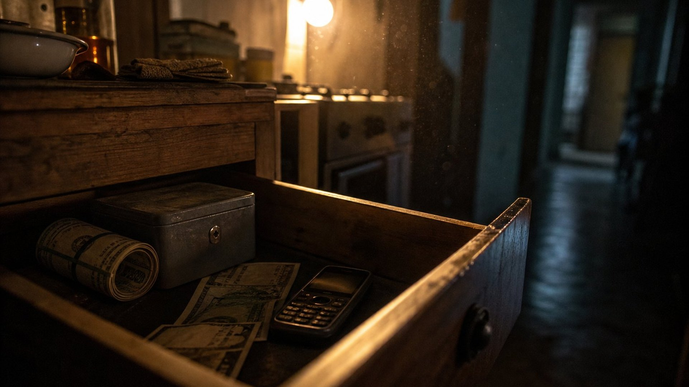
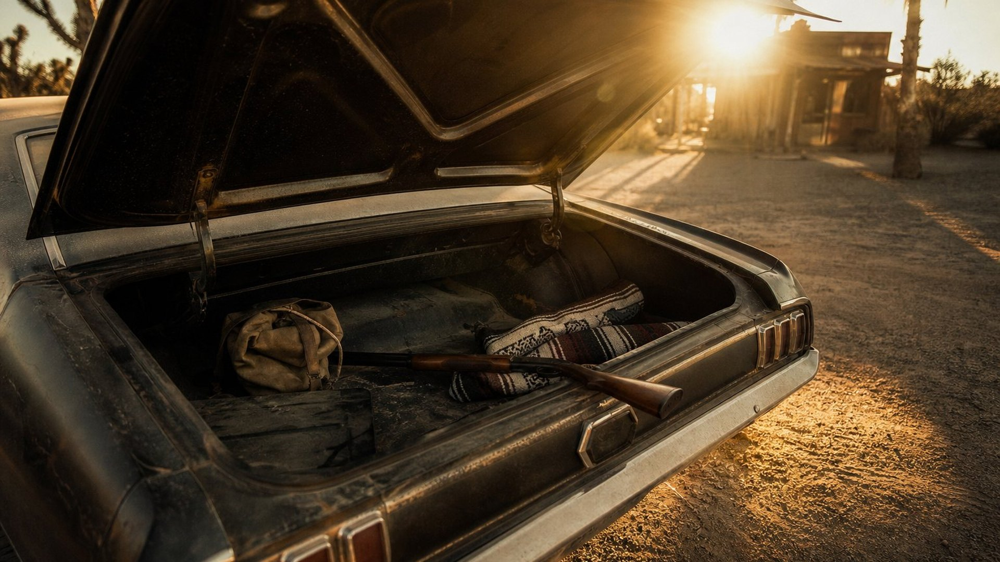
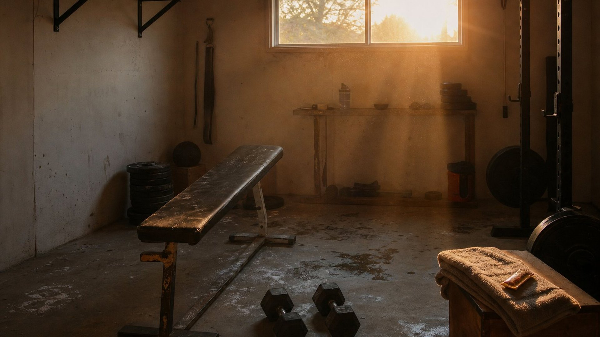
Deux catégories de conseils circulent depuis le lancement : ceux qui touchent aux réglages (zone morte, flou, cache) et ceux qui touchent à la méthode (véhicule, butin, point de contrôle). Les seconds valent plus que les premiers.
| Réglage | Effet | Contrepartie |
|---|---|---|
| Zone morte des sticks | le jeu répond plus tôt : la lourdeur ressentie diminue | risque de micro-mouvements involontaires |
| Flou de mouvement | image plus nette en mouvement | sur dalle OLED, certains préfèrent le garder (scintillement) |
| Vider le cache (PS5 base) | réduit les saccades selon plusieurs joueurs | aucune, si ce n'est le temps de manipulation |
| Couper le HDCP (PS5) | saccades réduites selon un joueur | plus de Blu-ray ni de streaming : à éviter si la console sert à ça |
TIP-64Les réglages d'abord, le matériel ensuite — la zone morte est le réglage le plus rentable ; le flou de mouvement se décide selon la dalle, pas selon un dogme.TIP-65Ne jamais commettre un crime avec sa propre voiture — si la police identifie le véhicule, il part à la fourrière et il faut aller le récupérer. Voler une voiture jetable et l'abandonner coûte moins cher.TIP-65Donner le butin au partenaire — il va le revendre à un receleur ; on gagne un peu moins, on économise des trajets entiers. Plus tard, les receleurs viennent chercher les sacs dans les garages possédés.TIP-65Point de contrôle : dedans oui, dehors non — « reprendre au dernier point de contrôle » est gratuit pendant une mission ; en monde ouvert, chaque erreur reste et se paie.TIP-66Focus mode et petits gestes — presser les deux sticks fait apparaître un halo autour des sources de bruit (signal d'une rencontre unique) ; on peut pousser un véhicule à la main ; n'importe quelle explosion ouvre un coffre.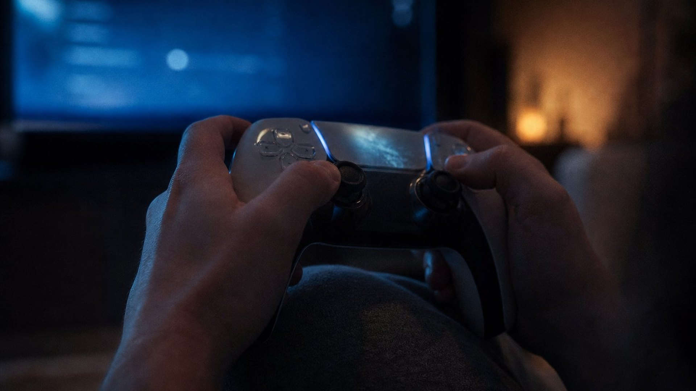
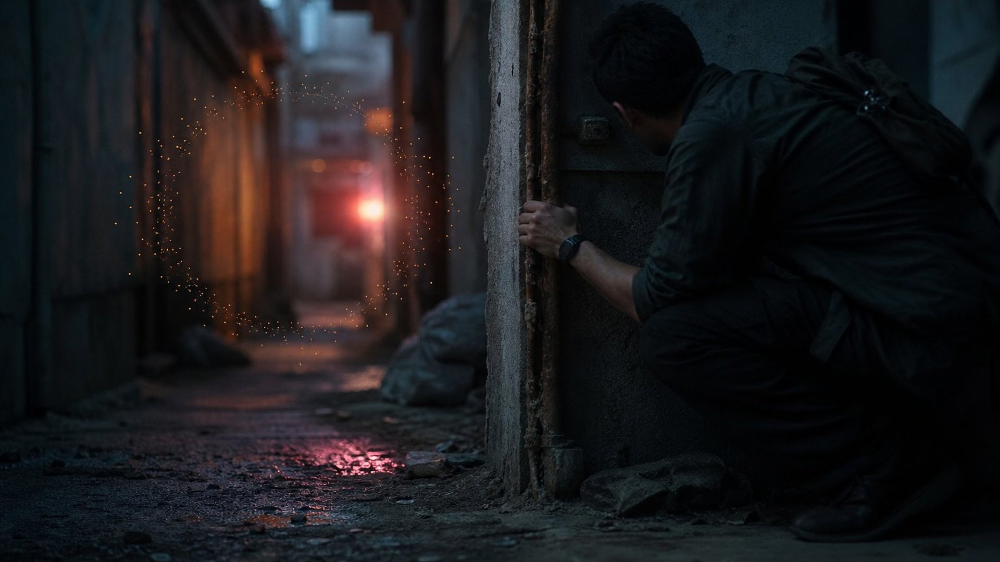
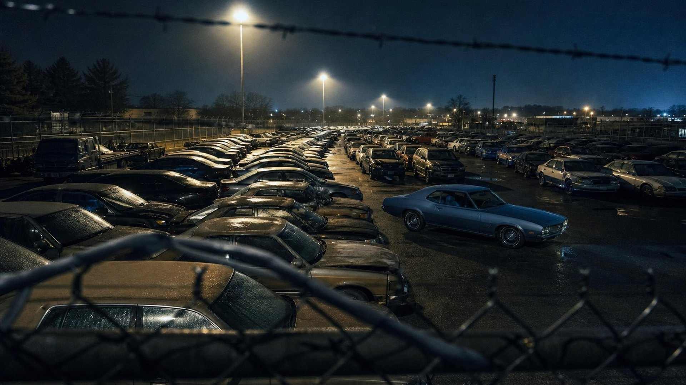
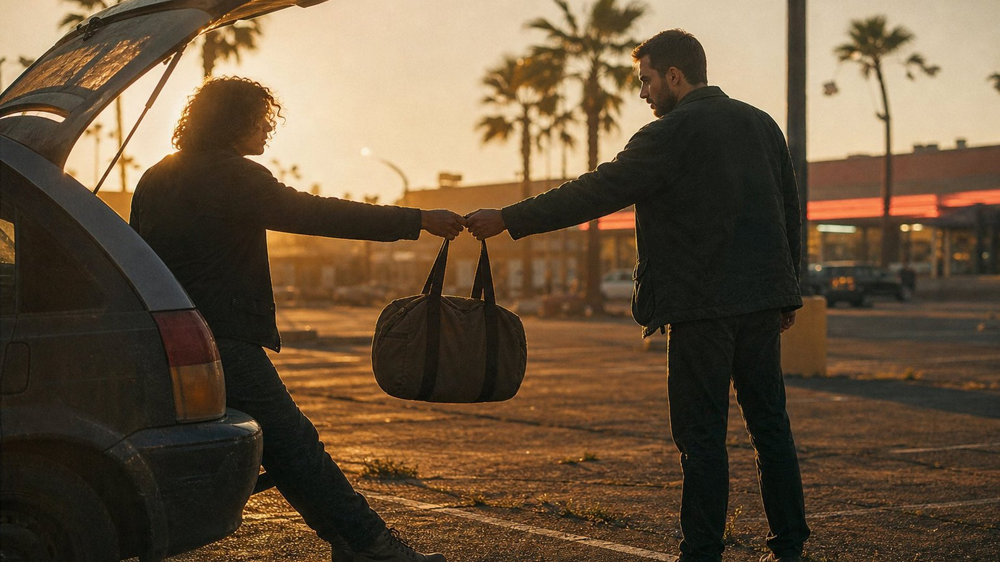
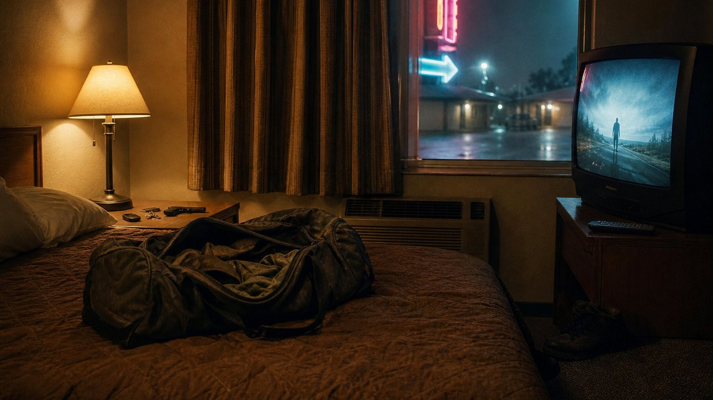
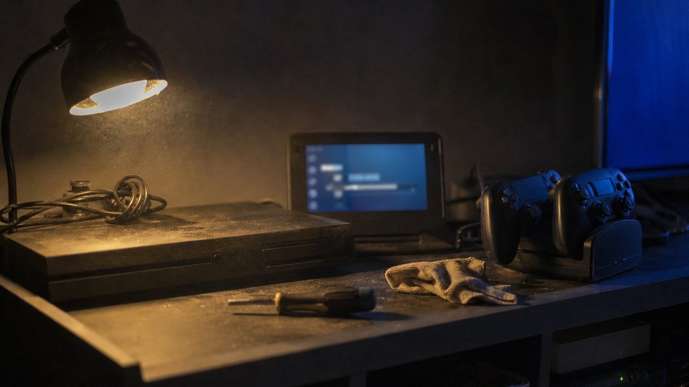
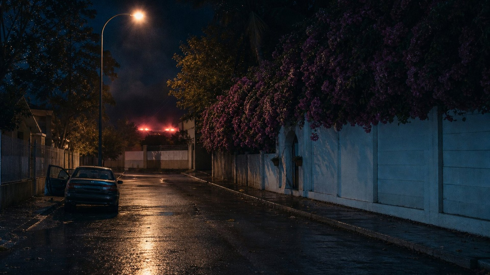
Une arme équipée d'une lunette passe en vue subjective en cliquant le stick droit. Impossible avec les mires métalliques. C'est l'accessoire à acheter dès qu'on trouve une arme qu'on aime. TIP-40
Les coups de feu se signalent : la police vient, même lors d'un assaut de repaire de gang — simplement plus lentement. Le silence achète du temps de fouille. TIP-40
TIP-42
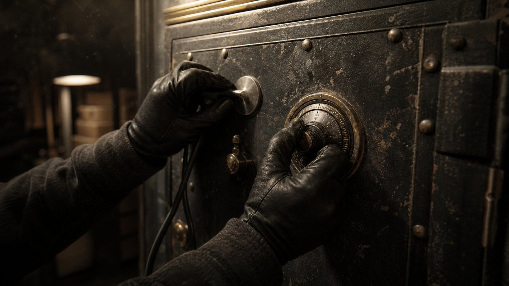
C'est la découverte la plus utile des conseils publiés le 18 novembre : le jeu distingue la blessure de la mort, et cette distinction se lit dans le marqueur de touche. Elle ouvre une manière de jouer que GTA VI est le premier de la série à rendre crédible de bout en bout.
| Marqueur | État de la cible | Conséquence |
|---|---|---|
| Rouge | Cible morte | Le corps reste sur place, l'attention monte, et la police peut être alertée par les témoins. TIP-58 |
| Jaune | Cible blessée, hors du combat | Neutralisée pour le reste de la fusillade, sans cadavre : la scène reste plus « propre » au sens du profil criminel. TIP-58 |
| Zone visée : tête, cœur | Létal | À éviter en approche discrète : c'est le tir qui fait du bruit et laisse un corps. TIP-58 |
| Zone visée : articulations, membres | Non létal | Le tir de « contrôle » : ralentit sans tuer, plus long à placer. TIP-58 |
Un coup de feu signalé déclenche une réponse policière pendant le braquage ; le silence laisse le temps de fouiller. La police réagit aussi à un assaut contre un repaire de gang, mais avec un délai bien plus long. TIP-57
Finir le jeu sans tuer personne est décrit comme possible mais très difficile : il faut tenir la contrainte pendant des dizaines d'heures, y compris dans les missions d'action. À réserver à une seconde partie. TIP-58
TIP-59
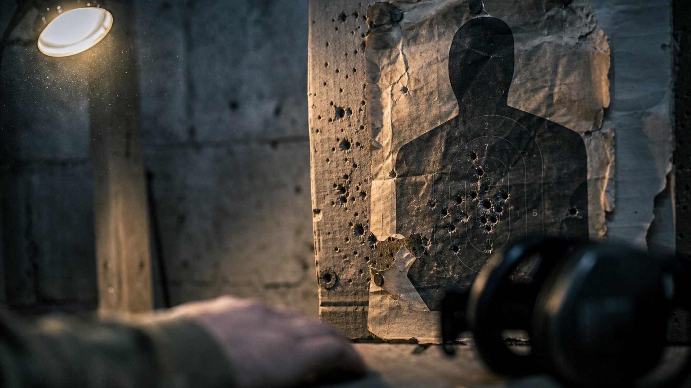
TIP-43Pousser un véhicule : marcher contre lui jusqu'à l'invite, puis maintenir l'action. Remet un bateau à l'eau, redresse une voiture retournée, sans payer de remorquage.TIP-44Coup de portière : la touche d'action en voiture frappe un passant, un motard, ou quelqu'un qui tente de vous extraire. À moto, c'est un coup de pied — utile pour déstabiliser en course.TIP-45Menu véhicule : maintenir gauche ouvre la radio, puis pousser le stick vers le haut ouvre le menu — warnings, pleins phares, vitres, capote.TIP-45Clignotants : une pression gauche ou droite sur la croix. Inutile, mais grisant.Démarrer en surface, cliquer le stick pour accélérer (deux fois pour le maximum), puis plonger quand l'endurance est vide : sous l'eau la jauge devient capacité pulmonaire et la vitesse maximale revient. TIP-47
Les bâtiments bleu foncé sont pénétrables — parfois seulement le garage ou un couloir. Faire tourner la carte pour trouver la porte, et guetter l'invite d'interaction à l'approche. TIP-48
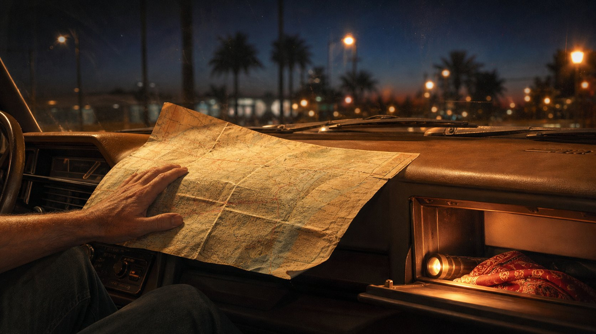
TIP-48TIP-46L'histoire est découpée en chapitres, chacun centré sur une planque. Une fois le chapitre suivant entamé, on ne revient pas en arrière sans sauvegarde manuelle.
TIP-41 Voir Trophées
TIP-41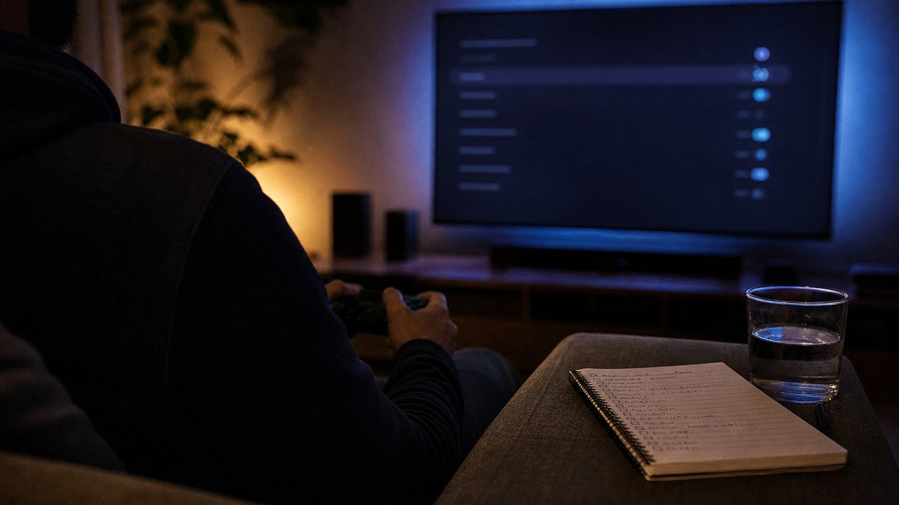
TIP-41TIP-39PRESSE · 18/11 Techniques issues des guides post-embargo, à ajuster selon votre style.
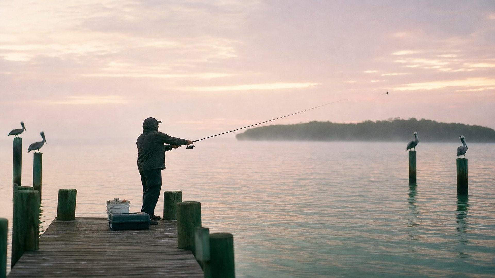
| Boucle | Ce qu'elle demande | Statut |
|---|---|---|
| Commerce de quartier | Un masque, une sortie rapide, un dépôt immédiat. Le plus simple à répéter, le plus faible en montant. | PRESSE · 18/11 |
| Véhicules | Lire le véhicule avant de le prendre, éviter ceux qui sont tracés, livrer sans dommage — un véhicule abîmé rapporte moins. | PRESSE · 18/11 |
| Repaires de gangs | Entrer, récupérer, revendre à un receleur. Le meilleur rapport temps/argent, mais la police arrive. | PRESSE · 18/11 |
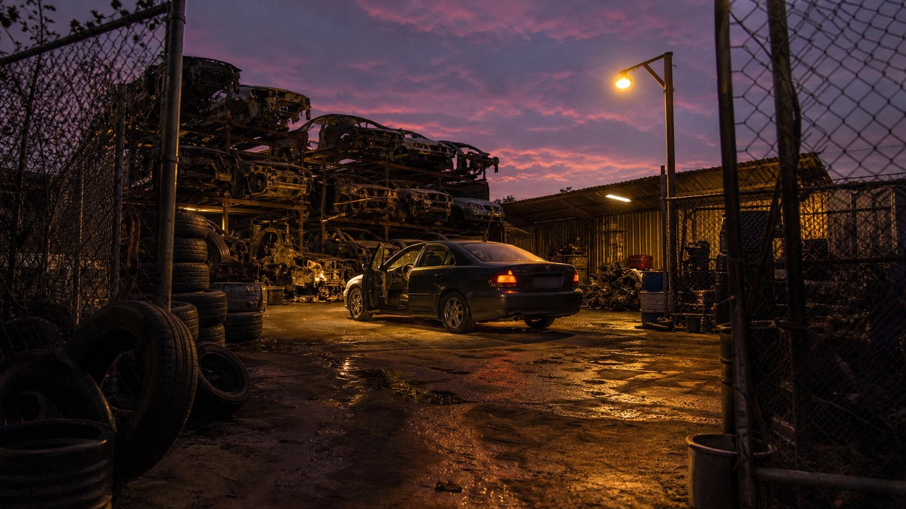
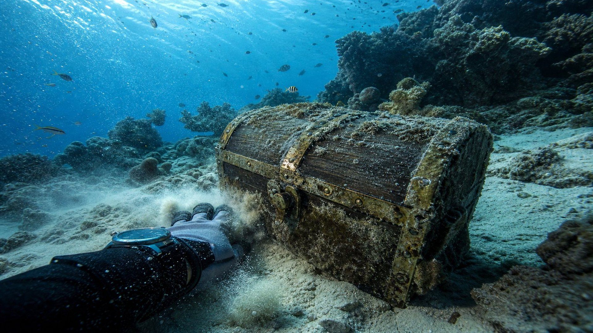
Un commerce « sécurité moyenne » ou « élevée » ne se tente pas seul. Le duo existe pour une raison technique : pendant que l'un tient la salle, l'autre vide la caisse et le coffre — et les sacs se passent. BRA-41
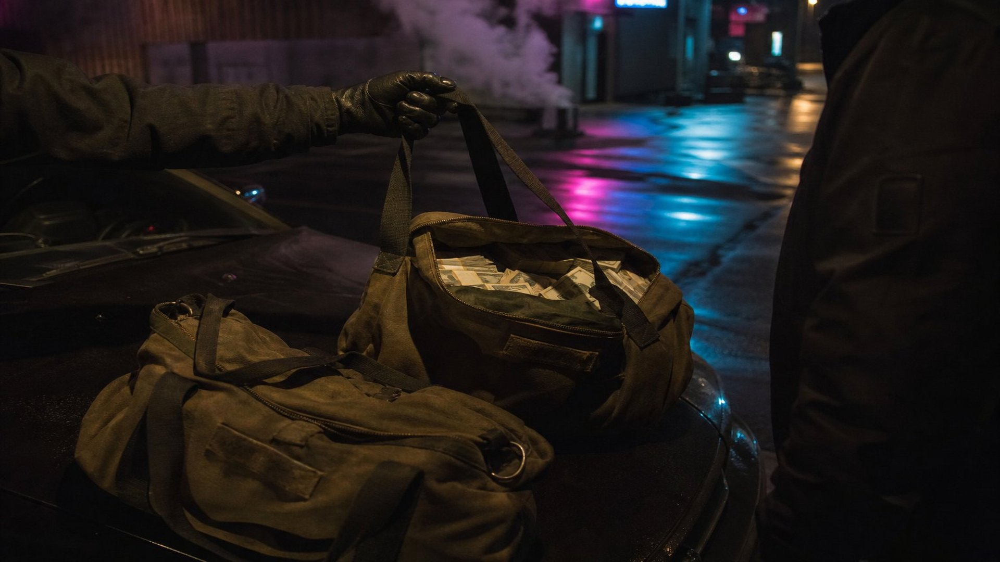
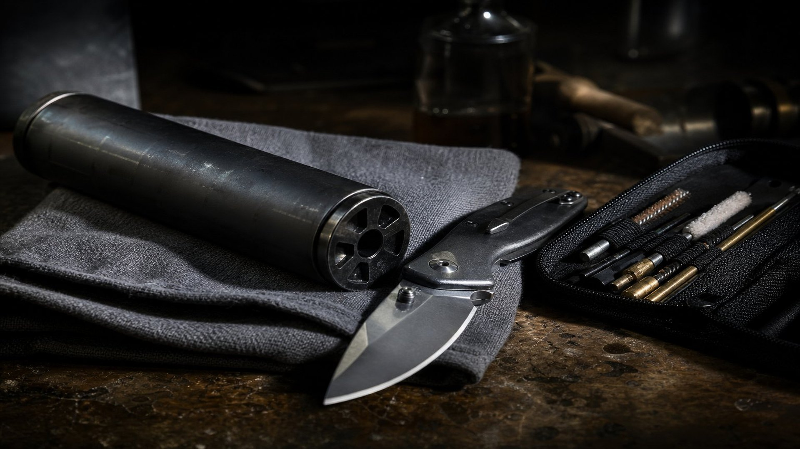
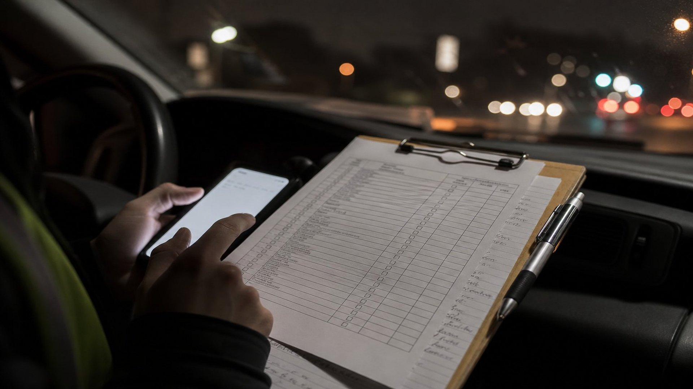
Nouveauté par rapport aux anciens épisodes : Jason et Lucia ne transportent plus un arsenal. La limite rapportée est de deux armes de poing dissimulées et deux armes longues visibles. D'où le réflexe de garer une voiture avec du stock dans le coffre avant une grosse journée. ARM-44
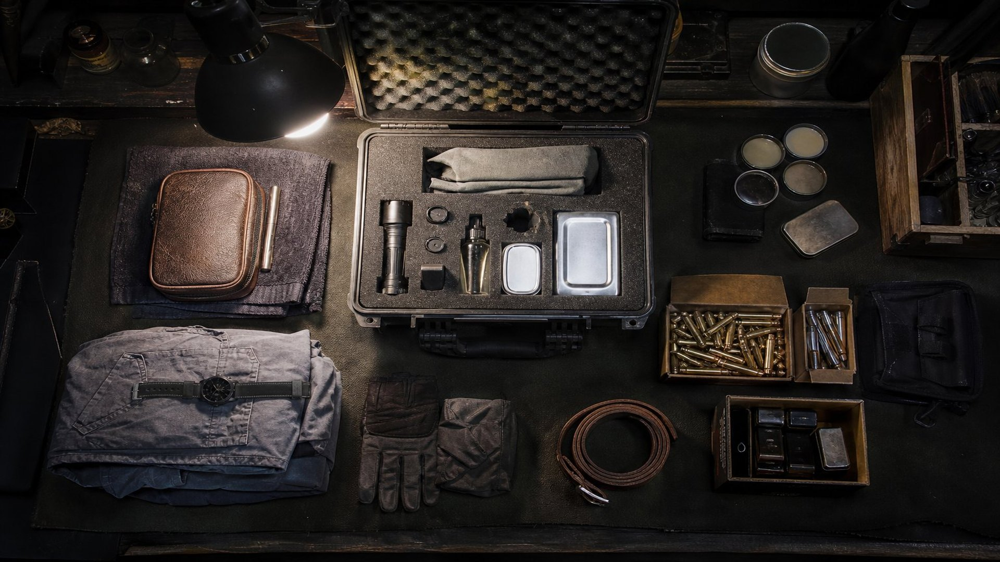
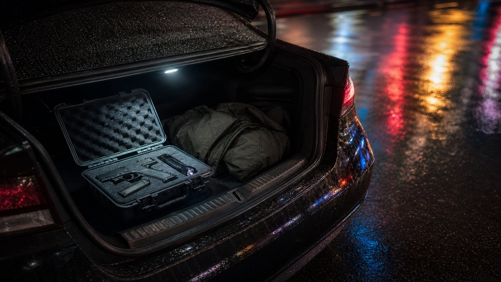
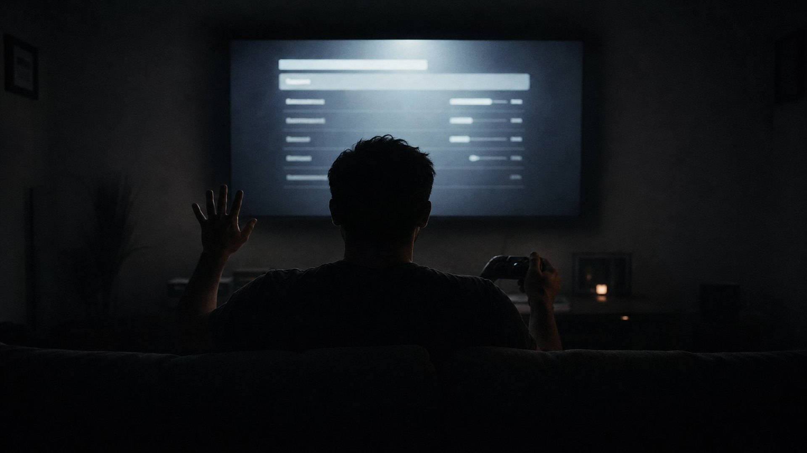